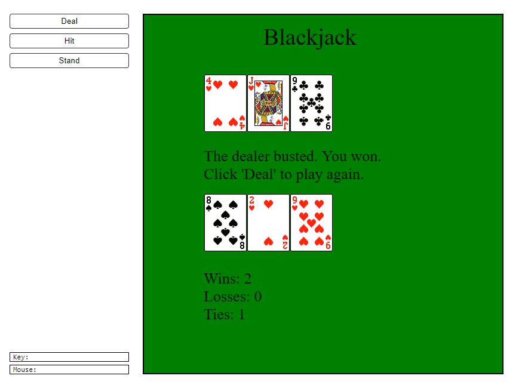

Joe Jonaitis
Python Programmer
Grand Rapids, MI

Blackjack
I designed a one-person blackjack game played against the dealer. The program employs three classes (card, hand, and deck), event functions (deal, hit, or stand), and a draw function and runs using two imported packages (simpleguitk and random). For images of playing cards, I used a tiled image of a deck of cards.
This version of blackjack follows standard blackjack rules. The player's goal is to beat the dealer's hand without going over 21. Face cards (J, Q, K) are worth 10. Number cards have the same value as their number. Aces are worth 1 or 11, with the program assigning the most advantageous value. The player may hit (ask for another card) as many times as desired as long as the hand value is less than 22. Once the player stands (requests not to receive any more cards), the dealer begins to play. The dealer is required to hit at 16 or lower and stand at 17 or higher. In this verion there is not an option for the player to split the hand if the two dealt cards have the same value. There also is not an option for the player to double down. No betting is allowed; only wins, losses, and ties are tracked.
Check out the code at my repository in GitHub or click on this link to run this program in CodeSkulptor, an interactive, web-based Python programming environment that allows Python code to be run in a web browser.
{kind=link}